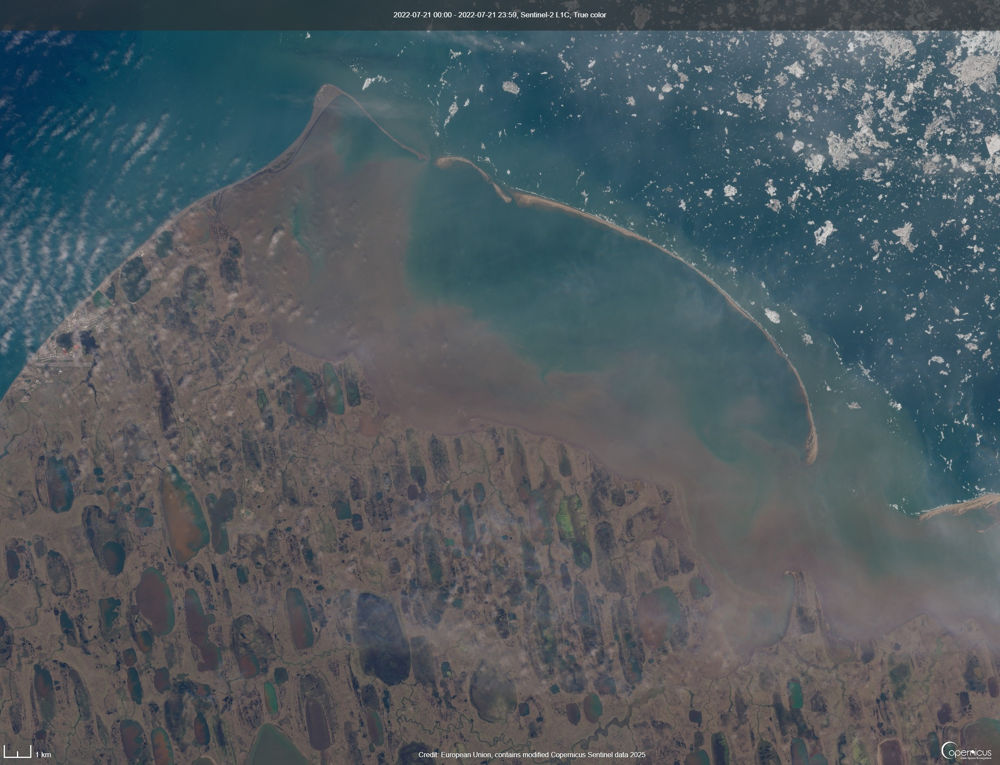
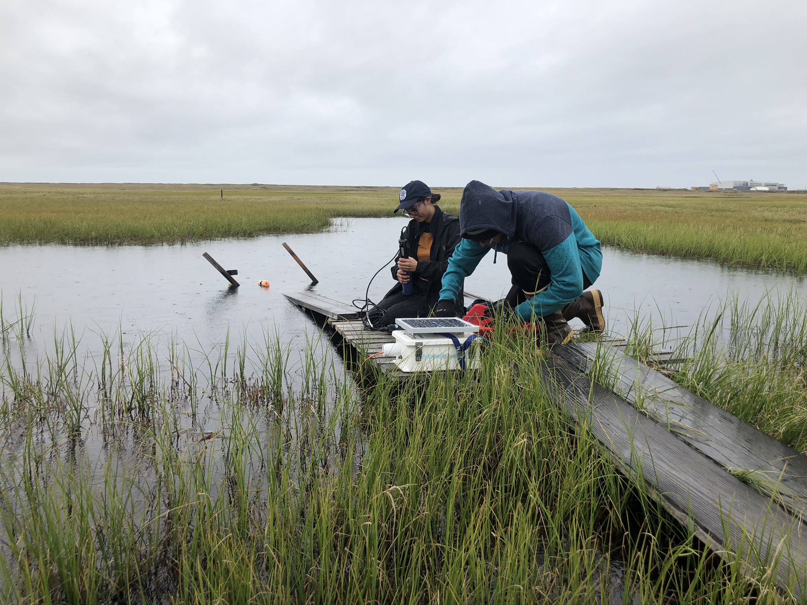

Investigating wind-driven circulation and riverine influence as drivers of carbon dynamics and ice-ocean interactions in nearshore Arctic estuaries and shelf environments.
About
My research focuses on Arctic coastal environments, where climate change is reshaping hydrologic connectivity, biogeochemical cycling, and ecosystem resilience.
My work combines field measurements, geospatial analysis, remote sensing, and environmental datasets to better understand how coastal ecosystems respond to rapid environmental change.
Projects

Ice-ocean Interactions in Nearshore Arctic

Coastal Inundation & Tundra Hydrology
Examining how saltwater intrusion alters subsurface thermal regimes and surface ecosystem processes.

Biogeochemical Impacts of Thermal Alteration
Studying how thermal changes alter carbon cycling and ecological processes in small Arctic aquatic ecosystems.
Selected Publications
Full list of publications available on Google Scholar and ResearchGate.
Spera, A.C., Peterson, S., Tweedie, C., Lougheed, V., 2026.
Wind-driven Circulation Impacts Water Quality and pCO2 Over an Estuarine Gradient in an Arctic Lagoon.
Estuaries and Coasts.
View publication
Spera, A.C., McClelland, J.W., Demir, C., Cardenas, M.B., Guimond, J.A., 2025.
Saltwater inundation’s concurrent effects on below-ground thermal hydrology and above-ground properties of Arctic coastal tundra.
Science of The Total Environment.
View publication
Spera, A.C., Lougheed, V.L., 2025.
CO2 Emissions From Low Order Tundra Streams Stimulated by Surface‐Subsurface Connectivity Following Extreme Rainfall Events.
JGR Biogeosciences.
View publication
Contact
Email: alina.spera@whoi.edu